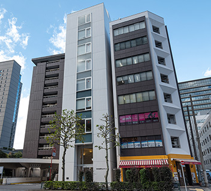

【個室レンタルオフィス】
オープンオフィス神保町
オープンオフィス神保町が提供するオフィスサービス
-
 高速インターネット＜光ファイバー＞
高速インターネット＜光ファイバー＞
- 100Mbpsの光ファイバーによるブロードバンド環境をご用意しました。各部屋に配線済みですので、パソコンに繋げばすぐLAN経由で高速インターネットを利用出来ます。
-
 ネットワーク・カラーレーザープリンタ+スキャナー
ネットワーク・カラーレーザープリンタ+スキャナー
- ネットワークを利用して、各お部屋のパソコンから印刷できます。プリンタをご用意いただく必要もございません。
スキャナー機能も搭載しております。
-
 カラーレーザーコピー
カラーレーザーコピー
- フロア内にご用意してあります。カード方式でコピーが出来ますので、小銭の準備が不要です。
-
 ICカードキーによる入室管理
ICカードキーによる入室管理
- 専用ICカードを使ったホテル式のスマートシステムを用いて、セキュリティーを向上させています。
-
 ミーティングルーム（会議室）
ミーティングルーム（会議室）
- 商談・会議にご利用いただける共有スペースをご用意しています。インターネットで簡単に予約をしていただけます。
-
 無線LAN（WiFi）
無線LAN（WiFi）
- 共有スペースとミーティングスペースにて、無線LAN(WiFi)サービスをご利用いただけます。

オープンオフィス神保町の特徴

大手町に隣接した人気ビジネスエリア
2駅4路線利用可能
大手町、日本橋、新宿、渋谷へのダイレクトアクセス
新耐震基準を満たした、安心性・安全性
緑溢れる落ち着いたビジネス環境
オフィス周辺のMap
オープンオフィス神保町近隣のスポット
- ■銀行
- みずほ銀行
りそな銀行
三井住友銀行
城南信用金庫 - ■レストラン
- 橋畔亭（料亭）
ラー・エ・ミクニ（フレンチ）
さかり寿司 - ■ホテル
- パレスホテル
KKRホテル
ホテルグランドパレス - ■サービスアパートメント
- ラ・トゥール千代田
東急ステイ 水道橋 - ■映画館
- 神保町シアター
- ■余暇施設
- 日本武道館
北の丸公園
東京国立近代美術館
皇居・千鳥ヶ淵
オープンオフィス神保町の住所・アクセス
- 住所:
- 東京都千代田区神田錦町3-7-2 東京堂錦町ビルディング7.8.9階
- 空港からのアクセス:
- 成田空港から電車で50分
成田空港から東急電鉄、都営浅草線で日本橋下車
東京メトロ東西線で神保町下車
羽田空港からバス・タクシーで50分
羽田空港からバスで東京駅まで45分
タクシーで5分
成田空港からバス・タクシーで80分
成田空港からバスで東京駅まで75分
タクシーで5分 - 電車からのアクセス:
- 東京メトロ東西線「竹橋」駅１ｂ出口 徒歩3分
東京メトロ半蔵門線、都営三田線、新宿線「神保町」駅 A9出口 徒歩3分 - お車でのアクセス:
- 外堀通り「一ツ橋河岸」交差点至近
オープンオフィス神保町のフロアマップ
7F

8F

9F

※フロア内は禁煙です。
※こちらはイメージ図となりますので、状況が異なる場合は現況を優先させていただきます。
- ◆初回納入金
- 利用料1ヶ月分の保証金
- ◆共益費
- 水道光熱費、ビル共益費、ゴミ出し、フロア・トイレの清掃、共有部分の消耗品代を含みます。
リージャスグループの説明
リージャス・グループは、柔軟なワークスペースを提供する世界最大の企業です。そのネットワークは世界120カ国1,100都市、3300拠点に及びます。会員数は250万人で、業界で成功を収める大小様々な企業や起業家の方々にご利用いただいています。
リージャスは、個室タイプのレンタルオフィス、コワーキングスペースなど多彩なオフィスプラン、近年需要が高まるモバイルワークやバーチャルオフィス、障害復旧サービスの提供を通じ、お客様が予算やワークスタイルに合わせて仕事を行うことができる環境を提供いたします。